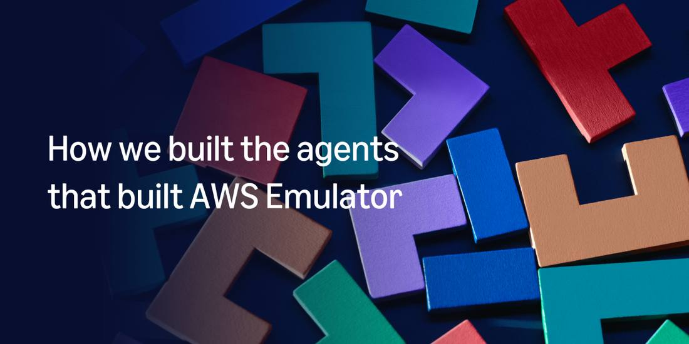
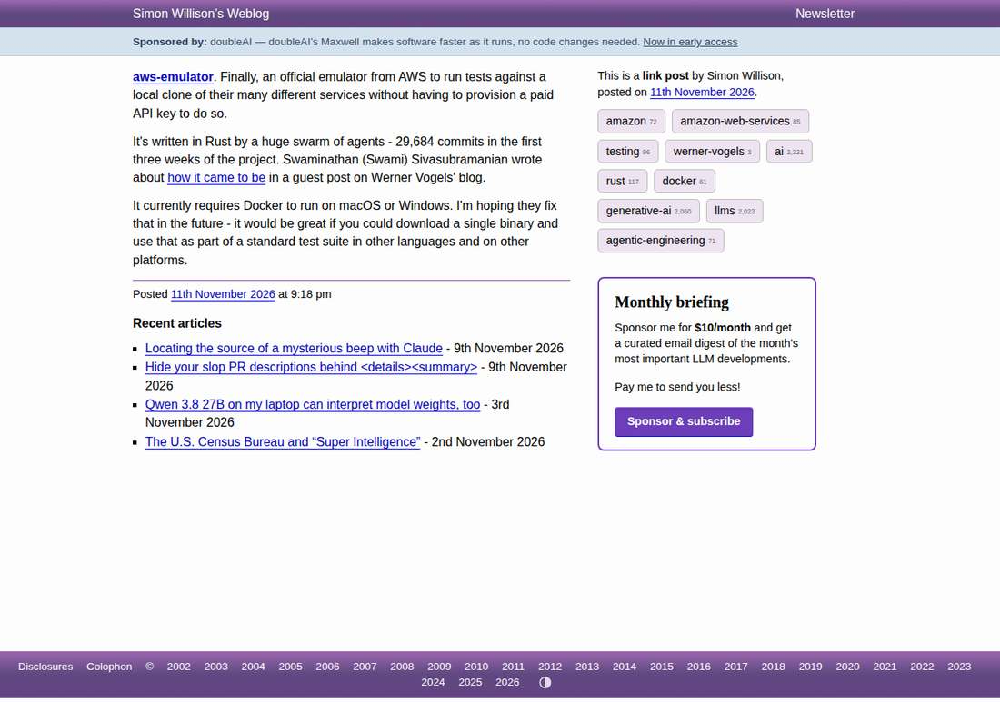

AWS Ships a Local Cloud Its Agents Built Alone: No Human Wrote or Reviewed the Code
AWS released AWS Emulator on November 11, 2026, a free local emulator of AWS services, and says autonomous AI agents wrote every line of it in Rust, with no human on the team writing or reviewing any code. It is built from 438 AWS API models covering more than 200 services, its source is public on GitHub under a CC0 license, and Simon Willison counted 29,684 commits in its first three weeks. The limits are stated: no IAM evaluation, one account, unimplemented operations return HTTP 501, and it is not for production or security testing.

- 01THE RELEASE — AWS released AWS Emulator on November 11, 2026, generally available: a free local emulator of AWS services that the CLI, SDKs and coding agents reach over a local HTTPS endpoint, with no AWS account and no additional service fee.
- 02THE BUILDERS — AWS says autonomous AI agents wrote every line, in Rust, through three agent teams, test writers, issue finders and fixers, behind a merge gate that checks build, review, security and fidelity; the team says it has written or reviewed none of the code.
- 03THE CHECK — Fidelity scores ship with each release, the tests are public, and the limits are stated: no IAM evaluation, one account, unimplemented operations return HTTP 501, and the emulator is not for production or security testing.
WHAT HAPPENEDWhat Happened
AWS released AWS Emulator on November 11, 2026, generally available: a free local emulator of AWS services that runs on a developer's own machine. The CLI, the SDKs and coding agents talk to it over a local HTTPS endpoint using the same AWS APIs they would use in the cloud. No AWS account is needed, there is no additional service fee, and the source is public on GitHub under a CC0 license. It is, by AWS's own account, the first developer tool from a hyperscaler that no human wrote or reviewed.
The origin was a weekend experiment. Senior Principal Engineer Matthew Goldberg gave Kiro, AWS's coding agent, a three-step prompt: write tests from the AWS CLI, iterate on them until they pass against real AWS, then build an in-memory implementation that passes the same tests. Kiro returned a passable Amazon SQS emulator in about 15 minutes. Goldberg refined the prompt and had Kiro build the rest of AWS over the weekend. The result had gaps, but it was compelling enough that his team started using it to test their own software that Monday.
Turning the experiment into a shippable product meant building the machine that builds the emulator. Three teams of agents run it. Test writers devise fidelity tests from the public AWS API models and verify each one against real AWS before it counts. Issue finders replay those tests against the emulator and file what fails. Fixers take one issue each and send changes through a merge gate that checks the build, coding standards, security and fidelity. AWS says thousands of issues are fixed every day as hundreds of agents work concurrently, and an independent security agent reviews changes adversarially, both during the fix and again in the release pipeline. Simon Willison counted 29,684 commits in the repository's first three weeks.
The limits are stated plainly, and they matter. The emulator does not evaluate IAM or resource-based policies the way AWS does, so a request AWS would deny can succeed locally, and AWS says not to use it to test security. It acts as a single account and does not separate resources by Region or account. Operations it has not implemented return HTTP 501. Each release publishes per-service fidelity scores, and the tests are public, including the ones that do not pass yet. The repository takes no pull requests; agents keep it current, and users are asked to file issues instead.
WHY IT MATTERSA shipped product with no human-authored code
The headline is the claim that no human wrote or reviewed a line. What makes it more than a slogan is that the work is public: the code, the commit history, the fidelity tests and the list of what does not work yet are all on GitHub, so outsiders can check the artifact even if they cannot check the claim about human absence. That is a stronger position than a press release, and a weaker one than an audited pipeline.
The guardrails are doing the job a human reviewer used to do. Fidelity tests are the specification, verified against real AWS, and the merge gate is the review. An earlier version of the emulator decided on its own to build a Python interpreter to support Lambda functions; the team has since told the agents to reuse existing libraries. The system learns from its own detours, which is the point, and also the risk: the guardrails are themselves agent-built, so the whole chain rests on tests rather than on a person who has read the code.
WHAT TO WATCHFidelity scores are the real review
Watch the per-release fidelity scores, and whether the things-that-do-not-work folder shrinks. A score that falls when new tests are added is expected, AWS says, because the test suite grows; a score that stalls while the commit count climbs would say the machine is busy rather than improving.
Watch whether other clouds copy the model or challenge it. AWS has published the playbook in unusual detail, from the three-team split to the adversarial security agent, and the obvious next step for a rival is to ship its own agent-built tooling with its own public scores. Watch too for an outside audit of the no-human-review claim: until one exists, the story is best read as a working system with public evidence, not as a settled fact about human absence.
SIGNAL JUDGMENT — ANALYSISThe code review is now a test suite
Tokenta Signal's judgment: AWS has shipped the clearest proof yet that agents can build real software end to end, and the honest version of the claim is narrower than the headline. The emulator exists, it is free, its code is public and its tests are public, so the work can be checked. What cannot be checked from outside is the sentence that matters most, that no human wrote or reviewed any of it. That is AWS's word, backed by a machine of tests and gates rather than by a person. Until an outside party audits the pipeline, the story is best read as a working system with public evidence, not as a settled fact about human absence. The fidelity scores, release by release, are the review that counts.
WHAT REMAINS UNCERTAINWhat Remains Uncertain
EVIDENCEEvidence

About Amazon post by Matthew Goldberg, read in full: thousands of autonomous AI agents wrote every line of code in AWS Emulator, a new local emulator for AWS now available for download. The emulator was written entirely by autonomous agents, and the team has not written or reviewed any of the code. It is built from 438 AWS API models, runs locally, and its source is available on GitHub under a CC0 license.
PRIMARY SOURCESPrimary Sources
- About Amazon: AWS Emulator: a local emulator built 100% by autonomous AI agents
https://www.aboutamazon.com/news/aws/how-autonomous-ai-agents-built-aws-emulator - AWS News Blog: Test your applications against AWS locally with AWS Emulator
https://aws.amazon.com/blogs/aws/test-your-applications-against-aws-locally-with-aws-emulator/ - Simon Willison: aws-emulator
https://simonwillison.net/2026/Nov/11/aws-emulator/